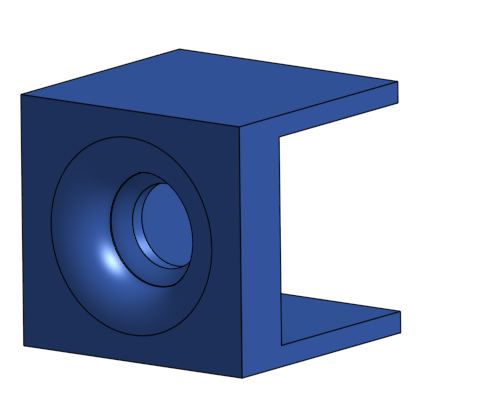

This is where the monitor routing idea finally became practical.
The original plan relied on IR switching, but that immediately created a problem: all three HDMI switchers respond to the same remote signal. If one device hears “Input 2,” they all switch to Input 2. That kills the entire point of independent routing.
Then I looked into other things. Software wasn’t the solution. Firmware hacking was unreliable. Shielding the devices physically would take space and look messy. The fix turned out to be mechanical.
Each switch doesn’t need to hear the room. It only needs to hear a dedicated signal.
Instead of broadcasting IR and hoping only one device responds, each switch will get its own direct emitter. The Pico W will control three separate IR LEDs — one per switch — effectively giving each unit a private remote.
That removes interference entirely and makes the system addressable.
The key piece is a small 3D-printed shroud that slides over the front of each HDMI switch. The design leaves the IR receiver area exposed internally, but blocks outside light from reaching it.
 Source: Self made VIA OnshapeA circular channel in the front holds a dedicated IR LED aimed directly at the receiver. Once mounted, the signal path becomes controlled and directional:
No bleed. No overlap. No shared input noise.
Each switch now responds only to its assigned emitter.
The Pico W becomes the routing brain.
Instead of cycling inputs, the system can now issue direct selections:
This effectively simulates a matrix switch without needing a $1000+ hardware solution.
The hardware itself was never the limitation. The real issue was signal separation.
By isolating the receivers and assigning a dedicated emitter to each one, the system becomes predictable, modular, and controllable. No firmware changes required. No internal modifications. Just controlled input targeting.
It’s simple, reliable, and scales cleanly.
And most importantly — it turns three cheap HDMI switches into an addressable routing system.